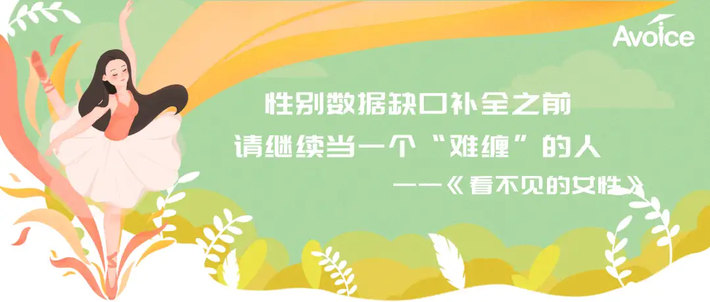
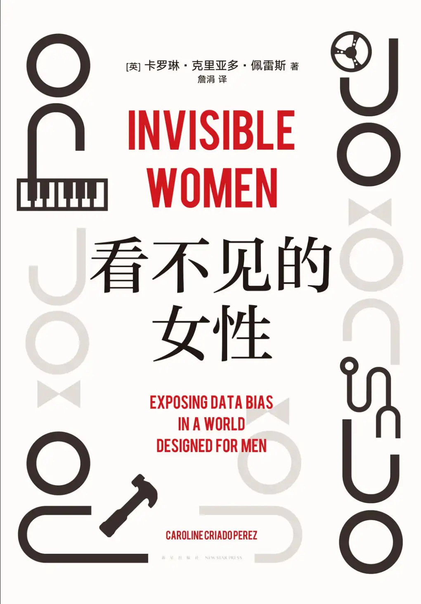
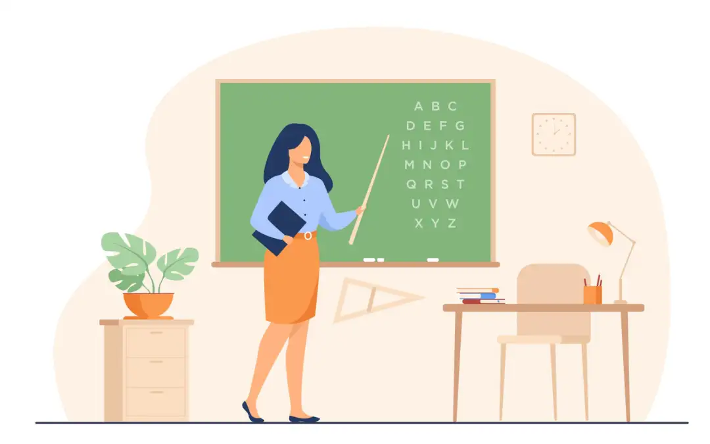

引言：
作为世界上占据一半人口的性别群体，女性至今仍被国际社会定义为“性别少数”。
和LGBTQ群体一样，在倡导包容和理解的道德规范下，女性依旧无法摆脱系统性性别歧视以及隐性剥削。更为可怕的是，这其中的很大一部分伤害我们早已习以为常，甚至被其伪善的外表蒙蔽，将其当作是自我约束的工具。
从校园到职场，从孕育到患病，从公交系统到住房建设，从服饰设计到道路清洁，大到公共政策的上行下效，小到社会生活的每一处细节，由男性设计者、工程师、领导家、决策者们制定的运行规则都在下意识地迎合男性需求。由于大量性别数据缺口，承担着全球约75%无偿照护工作的女性往往是被边缘化的，她们的付出“不被看见”，辛劳亦然。

图片来源：豆瓣读书
因此，作为长期为女性及弱势群体发声的研究学者，英国作家Caroline整理并罗列了大量详实的性别数据，掷地有声地将当代女性困境通过《看不见的女性》
一书告知众人。或许他们曾漠不关心，曾冷眼旁观，曾嗤之以鼻，眼前这些确凿的证据和控诉却足以唤醒其内心对两性地位的拷问：我们真的已经足够平等了吗？
若平等尚未到来，我们仍需为其奔走呼号。让更多求助的声音被听到，让更多消失的身影被看到。正如书中首页所写的那句话一样：让我们成为不屈的女性，继续当一个“难缠”的人。
2
数据论证：女性的沉默、缺席与边缘化
波伏娃说，“将世界呈现为世界，是男人的活动，他们以自己的观点描绘世界，把自己的观点和绝对真理混淆起来”。
图片来源：Freepik
在《看不见的女性》这本书中，女性主义作家Caroline深入研究了男性和女性之间普遍存在的数据不平等。通过对量化女性在家庭、工作场所和社区中的经历的数据
进行广泛研究，她揭示了覆盖各领域的性别差距，并提出，将女性排除在大数据之外只会更加耗费时间、金钱，甚至会付出生命的代价。书中以数据的形式直观地向我们展示了许多女性在生活中处处被忽视的例子，甚至可以说是一个记录社会中持续存在的性别不平等的数据目录。
女性同工不同酬，在家里做更多的无偿劳动，等待厕所的队伍更长，是各种暴力事件中在数量上压倒性的受害者……这些都不是什么令人惊讶的事实了，但这本书用数字量化了女性遭遇的痛苦，以百分比的形式看待不平衡，为理解和对抗它的过程提供了一个更为具体的落脚点。
作者Caroline在采访中指出，自己写这本书的契机其实是因为偶然发现女性心脏病发作的症状与男性心发作的症状不同，而自己从来都不知道这一点——或者说，从未被这样教育过。女性不会出现胸痛，左臂疼痛，当她们突发心脏病时，甚至可能不会意识到自己正在发病。不仅仅是女性自身——还有医生也对此缺乏足够的认知，女性心脏病发作时被误诊的可能性要高出50%，自1984年以来，美国和英国的女性死于心脏病发作的可能性显著高于男性。
和这个例子一样，这本书中还有很多值得反复咀嚼的数据和案例，例如世界上有三分之一的女性无法使用安全的厕所；城市规划和交通运输的决策上都没有将女性遇害的可能纳入考量；直到2011年，美国的汽车制造商才开始使用女性模型的碰撞测试假人……我们或许已经习惯了女性在文化、媒体、政治和电影中没有突出的代表角色，但书中指出，这种“边缘化”还延伸到了生活中的方方面面，延伸到了与日常生活息息相关的领域，比如临床医学和食品科学这种一出纰漏就会造成极大的安全隐患。

图片来源：Freepik
Caroline表示，全球范围内高达75%的无偿工作是由女性完成的，她们每天花在无偿工作上的时间在3到6小时，而男性同比则在平均30分钟到2个小时左右，此类现象不仅没有在改善，男性所承担的无偿工作占比仍然保持着“惊人的稳定”。男女之间的无偿工作量虽然受到地缘政治，社会政治，阶级等因素影响，但除了极少数个例之外，女性的工作时间都比男性工作时间长，而这额外的工作量则会潜移默化地影响妇女的身心健康，职业发展，财富积累等问题。
以家庭内部劳动分工为例子，由于母亲的生育角色和既定的性别角色分工，女性在传统上总被认为是肩负起抚养子女，照顾丈夫和家庭的一方，而丈夫则负责在外打工。贝克夫妇（1990）认为，性别战争是工业世界的产物及根基工作场所与家庭的区隔造成男性与女性日常处境的本质性差异
。女性的家庭内部劳动常常是无偿的，不被认为具备经济价值的，因此她们无法得到公平的报酬（即使丈夫会将工资的一部分交给妻子，但是这笔钱往往是用来维持整个家庭的生活开销以及后代的养育，也并非是作为个人劳动价值的体现）；而这些工作往往是高度重复性，机械性，也不会对个人职业发展有任何促进作用的。两性之间的的工作性质差异如此之大，尤其是依赖于无偿服务的家庭妇女，不被看见，不被认可，可能无法在日常生活和工作中找到属于个人的价值感以及成就感，而这会进一步刺激家庭内部的矛盾。
图片来源：Freepik
然而这些不平等都并不是刻意为之的阴谋，没有人希望女性生活在这个比起男性来说更加危险、更加苛刻的社会中，真正的原因只是令人难以置信的普遍文化偏见，人们只是没有意识到女性是被遗漏的样本数据，是“看不见的”。然而，女性隐形的奇怪之处在于女性并非少数，可她们又必须生活在一个以男性为中心的社会中。从缺乏有安全感的路灯，到缺乏工作场所的托儿设施，几乎所有东西似乎都是为男性设计的。如何解决这样的困境？作者的回答是重新思考，收集更多将女性纳入基本样本的数据，研究并询问女性她们真正想要的是什么。
这本书出版到现在已经三年了，作者完稿到现在的时间只会更长，对于一本以分析数据为主的著作来说，其时效性和普适性方面有着不可避免的缺陷，但这部作品仍旧有着重大现实价值。因为时至今日，书中的各种数据偏见没有任何改变的趋势。真相是：以男性为标准和中心设计的这个世界，依然让女性举步维艰。只要性别数据的缺口不被填充，所谓“男女平等”永远只是表面上的“中性平等”。
3
作品局限性：作者与跨别话题争议
图片来源：Freepik
虽然《看不见的女性》展现了女性群体被忽视的困境，但作者Caroline被指责将不是顺性别者的女性排除在书之外 ，比如双性人、跨性别者和非二元性的人。反对者批判此书展现了性别二元论，即将生理性别和社会性别划分为只有男性和女性的两种二元性别。书的前提只默认顺性别男性对顺性别女性造成的忽视，压榨和威胁。一个直观的例子是书中批判女性被默认和男性一样，来收集各个领域的数据，而忽视了男女在生物学、社会化和习惯方面的差异。反对者认为Caroline同样忽视了LGBTQ群体如何因社会默认的范式而遭受的边缘化问题。
这种批判逐渐发展到指责Caroline是恐跨性别者。虽然Caroline在书中的确没有解决跨性别者的数据收集问题，但反对者一开始没有意识到Caroline的遗漏可能是有意为之的，直到Caroline在公共社区表达了对跨性别的排斥：Caroline曾在推特中说不希望自己被称为顺性别者而是女人。她拒绝在出版物中使用“cis”这个词，因为这个词的意思是“非跨性别”。但Caroline删除了大部分类似言论的推特，读者无法深究她恐跨的原因。
相关案例让人联想到同样深陷恐跨纷争的JK罗琳。JK罗琳因为在推特上对一篇文章标题中“来月经的人”（those who menstruate）这一表达方式而不是“女性”（women）表示了强烈不满，引起网络争议。她回应表示“如果性别不是真的，那同性恋爱也不是真的，如果性别不是真的，那全世界女性真实的生活就被消解了，虽然我支持跨性别人，但是抹杀性别概念这种事情剥夺了许多人为自己发声的能力”，暗指允许跨性别女性占据了女性空间。
图片来源：Freepik
但事实上，跨性别者的权利和女性权利并不是零和博弈，而恰恰相反，两者奋斗的目标是相同的，即挑战传统父权制下对“非顺性别直男”的自由的限制。Caroline和JK罗琳对于跨性别者的否认并不能解决父权制的结构性问题，反而导致了跨性别者群体和女性群体间的互相攻击。
结语
关于决策制定是如何忽略、模糊或未能解决性别差异的问题，这本书提供了翔实的统计数据，在平装书版本中，有足足近80页的尾注，每一条都允许读者根据需要跟进，进一步揭示大数据将女性看作“他者”的事实。
在书本的序言中，作者写道：“从本质上讲，《看不见的女性》呼吁的是变革。”虽然一些读者可能会认为性别平等的时代已经到来，变革已不再重要，但这本书无疑是对这种思路的有力纠正。然而这不是一本关于提出政策建议或动员行动的书，它仅仅是关于暴露数据偏见。
图片来源：Freepik
但至少，这也将鼓舞那些与不平等作斗争的人，并激励其他人更加意识到性别偏见。虽然存在对于跨性别群体忽略的局限性，但是这本书能让读者重新思考这个世界的巨大缺陷，以及无限可能。
是时候，让女性被看见了。
正如Caroline在书中所说：
关注女性需求，不仅是一个正义的问题，也是一个简单的经济问题。
参考文献：
《爱情的正常性混乱》, 乌利西·贝克, 伊丽莎白·贝克, (1990)
作者 I 范珊玛 汤欣然 西西 潘诗雨
校改 I 张妮
审核 I 秦科
排版 I 缪林汐